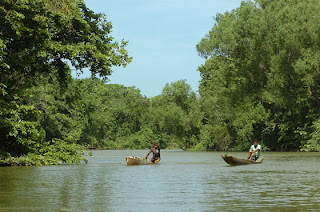

Biosfera del rio platano
Pagina principal
Animales de Honduras
Parque nacional la tigra
Biosfera del rio platano
Biosfera del rio platano
La Reserva de la Biosfera del Río Plátano ubicada en el corazón de La Mosquitia hondureña, es parte del Corredor Biológico Mesoamericano y abarca aproximadamente 8,000 km2. Es un sitio de orgullo nacional por su diversidad cultural y biológica. El Río Plátano alberga importantes áreas marinas costeras y coralinas, y una variedad de hábitat, que incluyen extensos bosques lluviosos, sabanas de pino, manglares, y cayos. El 50 por ciento de los ecosistemas de Honduras están representados en el siete por ciento del territorio nacional que representa la Biosfera de Río Plátano.
Esta región es además, el hogar de cinco pueblos diferenciados, los indígenas miskitos, tawahkas y pechs, los garífunas y los mestizos, comunidades que todavía conservan las tradiciones y estilo de vida de sus antepasados.

Pagina principal